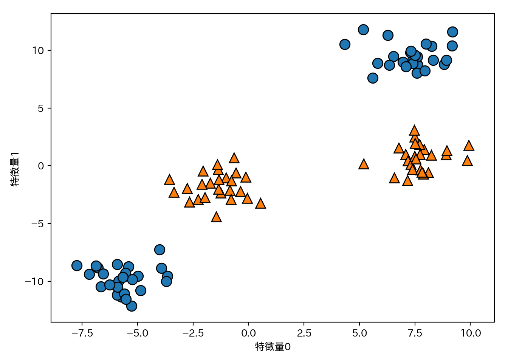
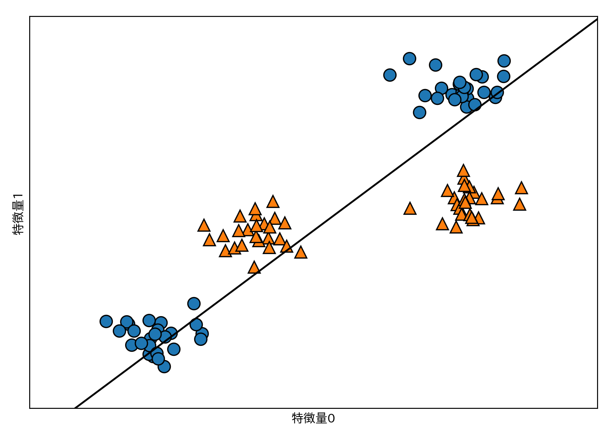
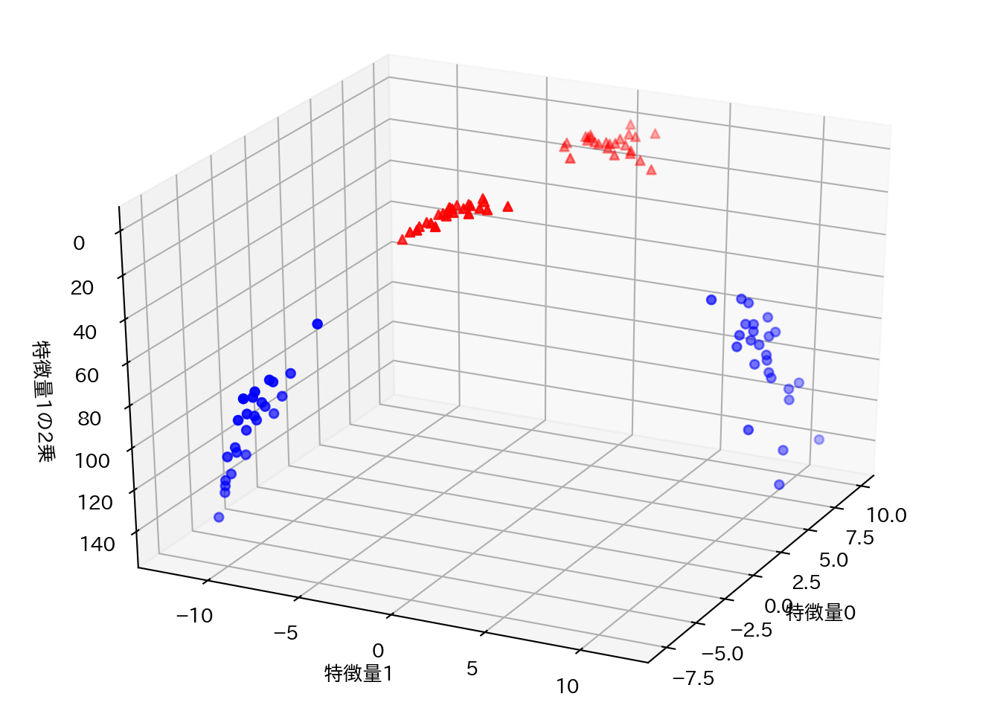
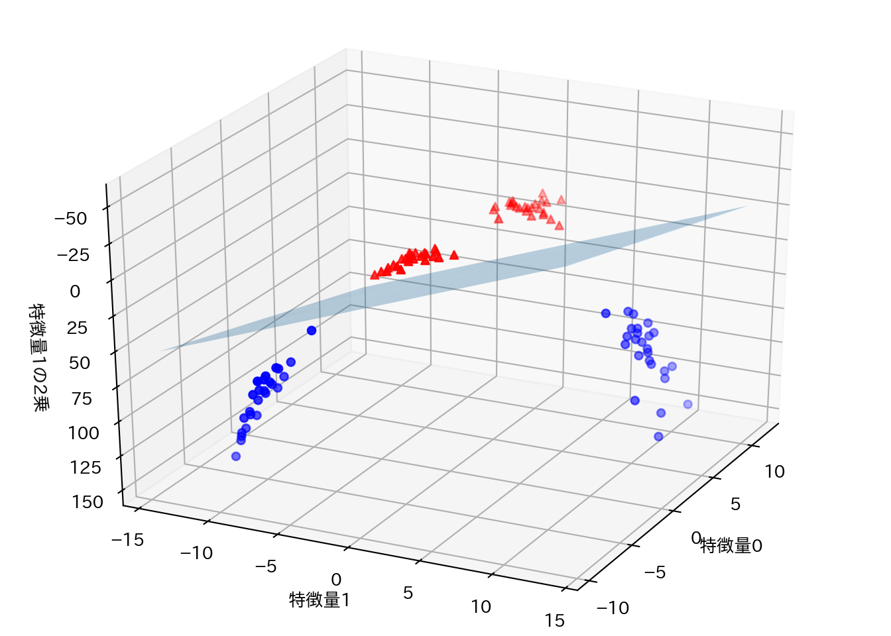
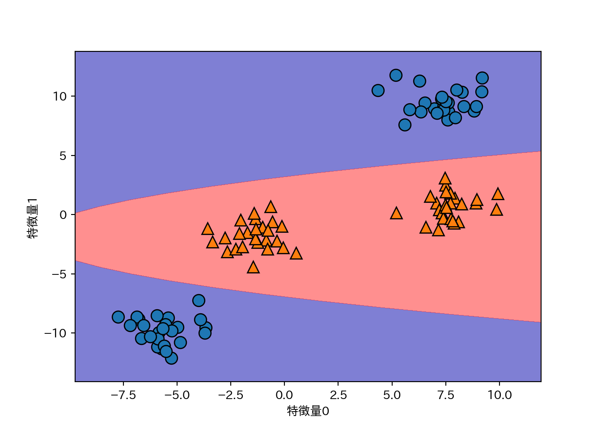
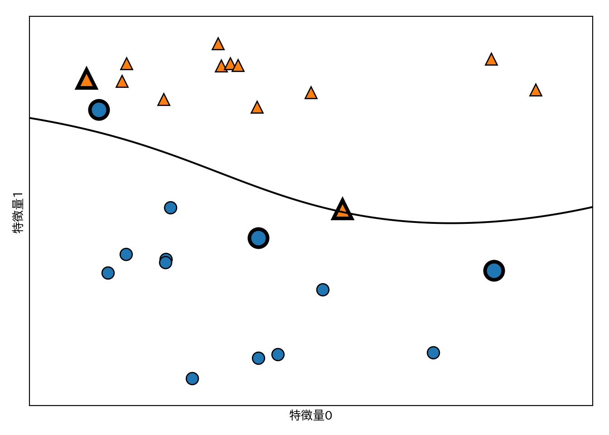
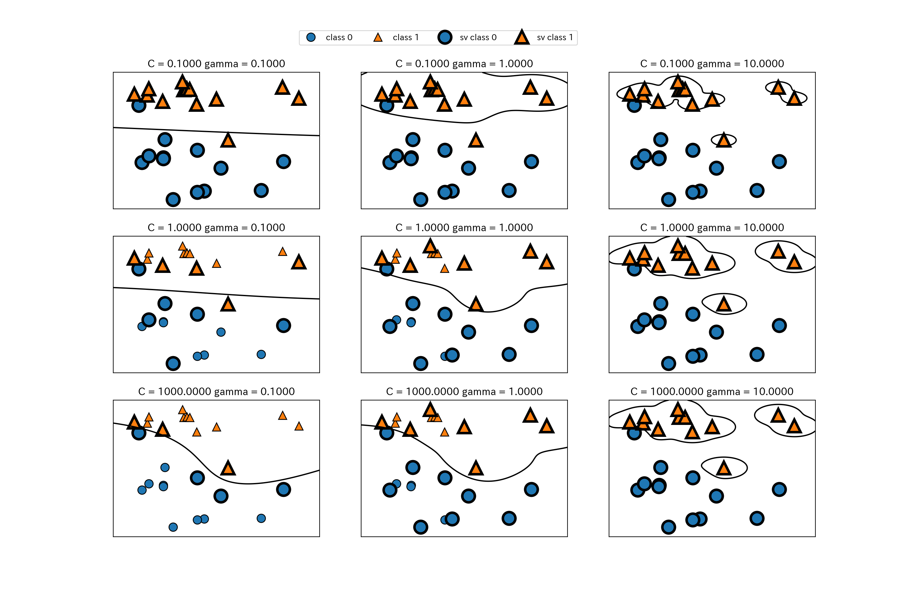
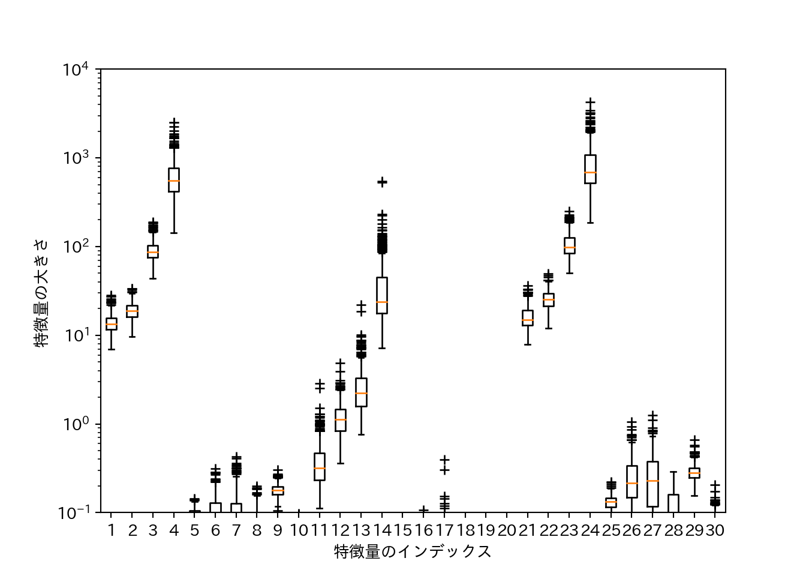

3.2 アルゴリズム6 カーネル法を用いたサポートベクタマシン
- より複雑なモデルを可能とするため線形モデルを拡張したもの。
- クラス分類にも回帰にも使える(例はクラス分類だけ)。
- 背後にある数学はめっちゃむずい。
3.2.1 線形モデルと非線形特徴量
- 線形モデルは特徴量を追加することで柔軟性が増す。
- 例: 特徴量の交互作用や多項式項を追加する。
過去に扱った、線形分離できない(単純な大小関係だけで判別できない)2クラス分類問題を例に扱う。
from sklearn.datasets import make_blobs
X, y = make_blobs(centers=4, random_state=8)
y = y % 2
mglearn.discrete_scatter(X[:, 0], X[:, 1], y)
plt.xlabel("特徴量0")
plt.ylabel("特徴量1")
このデータは明らかに直線では分離できない。
from sklearn.svm import LinearSVC
linear_svc = LinearSVC().fit(X, y)
mglearn.plots.plot_2d_separator(linear_svc, X)
mglearn.discrete_scatter(X[:, 0], X[:, 1] ,y)
plt.xlabel("特徴量0")
plt.ylabel("特徴量1")
特徴量1の二乗を新たな特徴量として加え、データを3次元にしてみる。
X_new = np.hstack([X, X[:, 1:] ** 2])
from mpl_toolkits.mplot3d import Axes3D, axes3d
figure = plt.figure()
ax = Axes3D(figure, elev=-152, azim=-26)
mask = y == 0
ax.scatter(X_new[mask, 0], X_new[mask, 1], X_new[mask, 2], c='b')
ax.scatter(X_new[~mask, 0], X_new[~mask, 1], X_new[~mask, 2], c='r', marker='^')
ax.set_xlabel("特徴量0")
ax.set_ylabel("特徴量1")
ax.set_zlabel("特徴量1の2乗")
新しく追加した特徴量方向にはクラス0とクラス1が分離可能になっている。
linear_svm_3d = LinearSVC().fit(X_new, y)
coef, intercept = linear_svm_3d.coef_.ravel(), linear_svm_3d.intercept_
figure = plt.figure()
ax = Axes3D(figure, elev=-152, azim=-26)
xx = np.linspace(X_new[:, 0].min() - 2, X_new[:, 0].max() + 2, 50)
yy = np.linspace(X_new[:, 1].min() - 2, X_new[:, 1].max() + 2, 50)
XX, YY = np.meshgrid(xx, yy)
ZZ = (coef[0] * XX + coef[1] * YY + intercept) / -coef[2]
ax.plot_surface(XX, YY, ZZ, rstride=8, cstride=8, alpha=.3)
ax.scatter(X_new[mask, 0], X_new[mask, 1], X_new[mask, 2], c='b')
ax.scatter(X_new[~mask, 0], X_new[~mask, 1], X_new[~mask, 2], c='r', marker='^')
ax.set_xlabel("特徴量0")
ax.set_ylabel("特徴量1")
ax.set_zlabel("特徴量1の2乗")
これを元の空間で見ると、決定境界が直線から曲線になっていることが分かる。
ZZ = YY ** 2
dec = linear_svm_3d.decision_function(np.c_[XX.ravel(), YY.ravel(), ZZ.ravel()])
plt.contourf(XX, YY, dec.reshape(XX.shape), levels=[dec.min(), 0, dec.max()],
cmap=mglearn.cm2, alpha=.5)
mglearn.discrete_scatter(X[:, 0], X[:, 1], y)
plt.xlabel("特徴量0")
plt.ylabel("特徴量1")
3.2.2 カーネルトリック
- 上の例では特徴量1の2乗を新しい特徴量として加えることで線形分離可能になったが、通常、どんな特徴量を追加すれば線形分離可能になるかは自明ではない。だからといって無闇に特徴量を増やせば計算量が増大してしまう。
- カーネルトリック(kernel trick)はこの問題に対応する手法。
- カーネルトリックを使うと実際に特徴量を拡張することなしに、拡張後の空間での特徴量を直接計算できる。この特徴量を直接計算するための関数をカーネルと呼ぶ。例えばガウシアンカーネルと呼ばれるカーネルを使うと、無限次元の空間上で特徴量を計算したのと同じ効果が得られ、しかも計算量はデータ数のみに依存するため、大きくなりすぎる心配がない。
- テイラー展開すると無限次元への写像になっていることが分かるらしい。
- ガウシアンカーネルは放射基底関数(radial basis function: RBF)カーネルとも呼ぶ。
- cf. 機械学習におけるカーネル法について - めもめも
3.2.3 SVMを理解する
- SVMは、決定境界の表現にとって個々のデータポイントがどの程度重要かを計算する。
- 基本的には2クラスの境界付近の少数のデータポイントのみが重要となり、これらのデータポイントはサポートベクタと呼ばれる。
- 予測の際は新しいデータポイントとサポートベクタの距離が測定され、これとサポートベクタの重要性を考慮してクラスが決定される。
- ガウシアンカーネルを使用するSVMでは次のガウシアンカーネルを用いて距離を計算する。
\[k_{\mathrm{rbf}}(x_1, x_2) = \exp (- \gamma || x_1-x_2 || ^2) \]
- \(x_1\)、\(x_2\)はデータポイントを、\(||x_1-x_2||\)はユークリッド距離を表し、\(\gamma\)は制御パラメータである。
- 注: \(\gamma = 1/\sigma^2\)として\(\sigma\)がパラメータとして説明される場合も多い。
SVMによる2クラス分類の結果を示す。
from sklearn.svm import SVC
X, y = mglearn.tools.make_handcrafted_dataset()
svm = SVC(kernel='rbf', C=10, gamma=0.1).fit(X, y)
mglearn.plots.plot_2d_separator(svm, X, eps=.5)
mglearn.discrete_scatter(X[:, 0], X[:, 1], y)
sv = svm.support_vectors_ # サポートベクタをプロット
sv_labels = svm.dual_coef_.ravel() > 0 # クラスラベルのニ値化
mglearn.discrete_scatter(sv[:, 0], sv[:, 1], sv_labels, s=15, markeredgewidth=3)
plt.xlabel("特徴量0")
plt.ylabel("特徴量1")
カーネル法を用いたSVMの決定境界は非線形となる。
3.2.4 SVMパラメータの調整
gamma: ガウシアンカーネルの幅を調整する。C: 正則化パラメータ。
パラメータと分類の関係を可視化する。
fig, axes = plt.subplots(3, 3, figsize=(15, 10))
for ax, C in zip(axes, [-1, 0, 3]):
for a, gamma in zip(ax, range(-1, 2)):
mglearn.plots.plot_svm(log_C=C, log_gamma=gamma, ax=a)
axes[0, 0].legend(["class 0", "class 1", "sv class 0", "sv class 1"],
ncol=4, loc=(.9, 1.2))
gammaは大きいほど個々のデータポイントを重視するようになり、モデルが複雑になる。Cは小さいほどモデルを制限する点は線形モデルと同様。
cancerにRBFカーネルを用いたSVMを適用してみよう。
X_train, X_test, y_train, y_test = train_test_split(
cancer.data, cancer.target, random_state=0
)
svc = SVC().fit(X_train, y_train)
print("訓練セットの精度: {:.3f}".format(svc.score(X_train, y_train)))
## 訓練セットの精度: 1.000
print("テストセットの精度: {:.3f}".format(svc.score(X_test, y_test)))
## テストセットの精度: 0.629- 訓練セットの精度が1であり、テストセットの精度が低く、過学習している。
- SVMはパラメータとデータのスケールに敏感に反応する。
- 特にデータのスケールは全ての特徴量で揃っている必要がある。
データのスケールを確認するために、個々の特徴量に対して対数スケールで箱ひげ図を作成する。
plt.boxplot(X_train, sym='+')
plt.ylim(10**-1, 10**4)
plt.xlabel("特徴量のインデックス")
plt.ylabel("特徴量の大きさ")
plt.yscale("log")
3.2.5 SVMのためのデータの前処理
- cancerは前掲のようにデータのスケールが特徴量により著しく異なる。
- 前処理のちゃんとしたやり方は後で説明するので、ここではとりあえず手作業でスケールを揃える。
# 最小値の計算
min_on_training = X_train.min(axis=0)
# レンジ = 最大値 - 最小値を計算
range_on_training = (X_train - min_on_training).max(axis=0)
# 最小値を引いてからレンジで割ることで、min=0、max=1に変換される
X_train_scaled = (X_train - min_on_training) / range_on_training
print("スケール済み特徴量の最小値: {}".format(X_train_scaled.min(axis=0)))
## スケール済み特徴量の最小値: [0. 0. 0. 0. 0. 0. 0. 0. 0. 0. 0. 0. 0. 0. 0. 0. 0. 0. 0. 0. 0. 0. 0. 0.
## 0. 0. 0. 0. 0. 0.]
print("スケール済み特徴量の最大値: {}".format(X_train_scaled.max(axis=0)))
## スケール済み特徴量の最大値: [1. 1. 1. 1. 1. 1. 1. 1. 1. 1. 1. 1. 1. 1. 1. 1. 1. 1. 1. 1. 1. 1. 1. 1.
## 1. 1. 1. 1. 1. 1.]テストセットについても同様の変換を行うが、最小値とレンジは訓練セットのものを使う。
X_test_scaled = (X_test - min_on_training) / range_on_trainingしたがって、テストセットのレンジは0〜1ではない。この点については第4章で解説される（らしい）。
print("テストセットの最小値: {}".format(X_test_scaled.min(axis=0)))
## テストセットの最小値: [ 0.03540158 0.04190871 0.02895446 0.01497349 0.14260888 0.04999658
## 0. 0. 0.07222222 0.00589722 0.00105015 -0.00057494
## 0.00067851 -0.0007963 0.05148726 0.01434497 0. 0.
## 0.04195752 0.01113138 0.03678406 0.01252665 0.03366702 0.01400904
## 0.08531995 0.01833687 0. 0. 0.00749064 0.02367834]
print("テストセットの最大値: {}".format(X_test_scaled.max(axis=0)))
## テストセットの最大値: [0.76809125 1.22697095 0.75813696 0.64750795 1.20310633 1.11643038
## 0.99906279 0.90606362 0.93232323 0.94903117 0.45573058 0.72623944
## 0.48593507 0.31641282 1.36082713 1.2784499 0.36313131 0.77476795
## 1.32643996 0.72672498 0.82106012 0.87553305 0.77887345 0.67803775
## 0.78603975 0.87843331 0.93450479 1.0024113 0.76384782 0.58743277]スケール済みの特徴量を使ってSVCを行う。
svc = SVC().fit(X_train_scaled, y_train)
print("訓練セットに対する精度: {:.3f}".format(svc.score(X_train_scaled, y_train)))
## 訓練セットに対する精度: 0.948
print("テストセットに対する精度: {:.3f}".format(svc.score(X_test_scaled, y_test)))
## テストセットに対する精度: 0.951スケール前に比べるとかなりの改善が見られる。さらにパラメータを少し調整すると、さらに良くなる。
svc = SVC(C=1000).fit(X_train_scaled, y_train)
print("訓練セットに対する精度: {:.3f}".format(svc.score(X_train_scaled, y_train)))
## 訓練セットに対する精度: 0.988
print("テストセットに対する精度: {:.3f}".format(svc.score(X_test_scaled, y_test)))
## テストセットに対する精度: 0.9723.2.6 利点、欠点、パラメータ
- いろいろなデータに対して上手く機能する強力なモデルである。
- データに僅かな特徴量しかなくても決定境界が引ける。
- 低次元のデータでも高次元のデータでも機能する。
- サンプルの個数が多いと上手くいかないことがある。
- 10,000サンプルくらいまではいけるが、100,000サンプルくらいになるとメモリや速度面から厳しくなってくる。
- データの前処理とパラメータのチューニングは必須といえる。
- モデルについて決定木のように誰にでも分かる形で説明するのは難しい。
- パラメータは正則化パラメータ
Cとカーネル固有のパラメータがある。- RBFカーネル以外のカーネルを使うこともできる。
- RBFカーネルにおける
Cとgammaは強く相関するため同時いチューニングする必要がある。